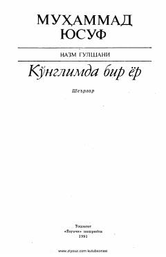

KBO'zbekiston xalq shoiri Muhammad Yusufning lirik she'rlar to'plami.
Ushbu to'plamda atoqli o'zbek shoiri Muhammad Yusufning lirik she'rlari o'rin olgan bo'lib, ularda ona yurt mehri, sof muhabbat va insoniy tuyg'ular tarannum etilgan. Shoirning o'ziga xos samimiy va sodda uslubi kitobxonni o'ziga rom etadi.